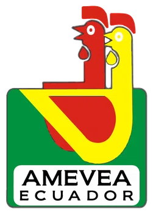
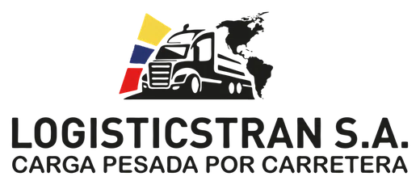

Implement the LOPDP
Build or update documents, procedures and responsibilities for handling data in your operations.
See implementation and deliverables ↗PERSONAL DATA PROTECTION · ECUADOR
LOPDP implementation, external DPO and review of your programme. Let’s identify what you need and where it makes sense to start.
Same-business-day response.
Free preliminary consultation: a questionnaire or a 20-minute call. The detailed analysis is defined in the proposal.
Two cases announced by the SPDP in December 2025:
LigaPro · USD 259,644.01
Fan ID app.
FEF · USD 194,856.16
Fan FEF app.
The authority reported serious infringements due to insufficient measures for data processing. These are specific cases, not an estimate of a fine for your organization. Official SPDP source · 1 December 2025 ↗
THE SERVICE DEPENDS ON YOUR STARTING POINT
You may need a specific intervention or a combination of services. The proposal defines the work and the responsibilities.
Build or update documents, procedures and responsibilities for handling data in your operations.
See implementation and deliverables ↗Specialized advice and oversight without adding a new position to your payroll. Our external DPO supports your organization with defined duties, follow-up and fees.
Explore the DPO service ↗In Ecuador the role is called DPD (Delegado de Protección de Datos); in English it is known as DPO, Data Protection Officer.
If you already have policies or a programme, we review their status to decide what to keep, correct and complete. The audit and the regularization have their own scope and deliverables.
Ask about a review ↗We also scope projects for impact assessments, contracts with providers and international transfers, training, and preparation to respond to requests or incidents.
For foreign controllers or processors, we assess whether a special attorney-in-fact is needed in Ecuador. That representation is different from the DPO and requires a review of the entity, the duties and any possible conflicts of interest.
Ask about a specific scope ↗THE EXPERIENCE OF ONE FIRM
Clients of the firm across different legal services. The featured cases explain the scope of the data protection work.


Experience in practice
Two TempoLegal experiences in implementing and supporting personal data protection.
Business group · Logistics
Healthcare · Patient information
Application by sector
We also support service companies, business groups and foreign companies operating in Ecuador.
Medical records, patients, laboratories and medical providers.
Data protection in healthcareStudents, families, images and educational platforms.
Data protection in educationB2B contracts, cloud providers and information flows.
Data protection for softwareNO NEED TO START FROM SCRATCH
You don’t need to know the legal name of the service to contact us. Tell us what is happening and what you have been asked to solve.
Activity, entities involved, processing operations, systems and previous work. We review what exists before proposing to redo it.
We specify what should be kept, what needs review and which service applies, keeping execution, oversight and representation separate.
Deliverables, your team’s involvement, timeline and fees before you hire us.
YOUR DOCUMENTATION AND THE DPO’S WORK

CumpliDatos is TempoLegal’s platform for consulting your programme documents and the records of our work with your organization.
Included at no extra cost while you keep the DPO service with TempoLegal.
Ask about the DPO service with CumpliDatos ↗RoPA and documentsConsult your Record of Processing Activities (RAT) and your programme documents.
Training and reportsAccess the training log and the DPO’s reports.
Data subject requestsYour organization can log the requests it receives from individuals about their data.
In development An AI chatbot and agents, with planned data-mapping and RoPA-update features. These features are not yet part of the available service.
The platform supports the professional work and your organization’s management; using it does not constitute a certification of compliance.
The people behind the work
The legal team and the IT specialists take part according to the service contracted. Each proposal identifies who is responsible, the technical involvement and the separation of duties when there is a DPO.
Meet the whole team
Founding partner
Corporate law · Data protection
Senior lawyer
Data protection · Regulatory complianceCoordinated legal and technical work
Review of access, devices, accounts and backups, in coordination with the relevant areas of your organization.
Our clients, in their own words
Client experiences across different TempoLegal services.
Trust in the firm
I received clear, personal advice; the team understood my needs, explained each step of the process and was available to answer my questions. Beyond their legal knowledge, I especially valued their commitment and the personalized attention throughout the process.
Business experience
TempoLegal has supported us for years on employment, corporate, contractual and personal data protection matters. They know how the group works, so when a problem comes up we can go straight to what matters.
We have worked with Juan Alberto Gómez and the TempoLegal team on contracts and corporate matters. What I appreciate is being able to raise a problem with confidence and receive a clear opinion, designed for what the company really needs.
More about the firm: Firm magazine (Spanish) · PDF ↗. Issue of 15 October 2026.
RISKS WORTH ADDRESSING
Non-compliance can lead to corrective measures and sanctions. Knowing the obligations and documenting how they are met allows you to manage the risk with information.
Private entities and public companies
0,1 % a 0,7 %
0,7 % a 1 %
Of the turnover for the financial year immediately preceding the one in which the fine is imposed. It is not calculated on profit. The SPDP determines the sanction through the corresponding procedure and applies proportionality criteria.
For public servants or officials, the law provides for 1 to 10 unified basic salaries for minor infringements and 10 to 20 for serious ones. Public companies follow the percentage ranges shown above.
Implementation must match the real operation: documents, processes, measures and evidence. We define the priorities and the scope of the work; hiring it does not guarantee full compliance or the absence of sanctions.
DECIDE WITH INFORMATION
It depends on your activity, your processing operations and the work already done. The preliminary consultation indicates whether it makes sense to implement a programme, appoint a DPO when required or review specific aspects. The detailed assessment is scoped in the proposal.
No. Implementation organizes and carries out the agreed work; the DPO informs, advises and oversees independently. The organization keeps its own decisions and responsibilities. You may need both, with separate duties and prevention of conflicts of interest.
Yes. We review what exists to define what can be kept, updated or completed. The proposal specifies the depth of the review and its deliverables.
We serve organizations throughout Ecuador from Quito, with remote coordination and visits when agreed. The healthcare and education pages explain situations specific to those sectors; other projects are assessed according to activity and processing operations.
No. It consists of a questionnaire or a 20-minute call to understand your needs and guide a proposal. It does not include an audit or a full compliance opinion.
According to the service, the entities involved, processes, types of data, complexity and existing documentation. Before hiring us you receive a proposal with scope, timeline and fees.
Not necessarily. We review the responsible entity, its activity, the processing subject to Ecuadorian law and the need for local representation. The special attorney-in-fact and the DPO have different duties; they are not offered as interchangeable roles.
Guidance tools
Free tools to organize your questions before talking to our team. Your answers are calculated in your browser.
Where to start
Identify which aspects of your organization should be reviewed first.
Explore my priorities ↗Review the appointment criteria and large-scale processing criteria before talking to our team.
Explore the appointment criteria and large-scale data processing.
Review DPO and large scale ↗Indicative ranges
Check the legal ranges for a scenario, without attributing an infringement to it.
Explore the ranges ↗General guidance based on your answers. It does not replace a legal review of your case.
See frequently asked questions (Spanish) ↗Let’s talk about your organization
Tell us what your organization does and what you need to solve. If you were given this task and don’t know where to start, we will guide you.
We start with a questionnaire or a 20-minute call, free of charge and with no obligation to hire us. With that information, we prepare a proposal with deliverables, timeline and fees.